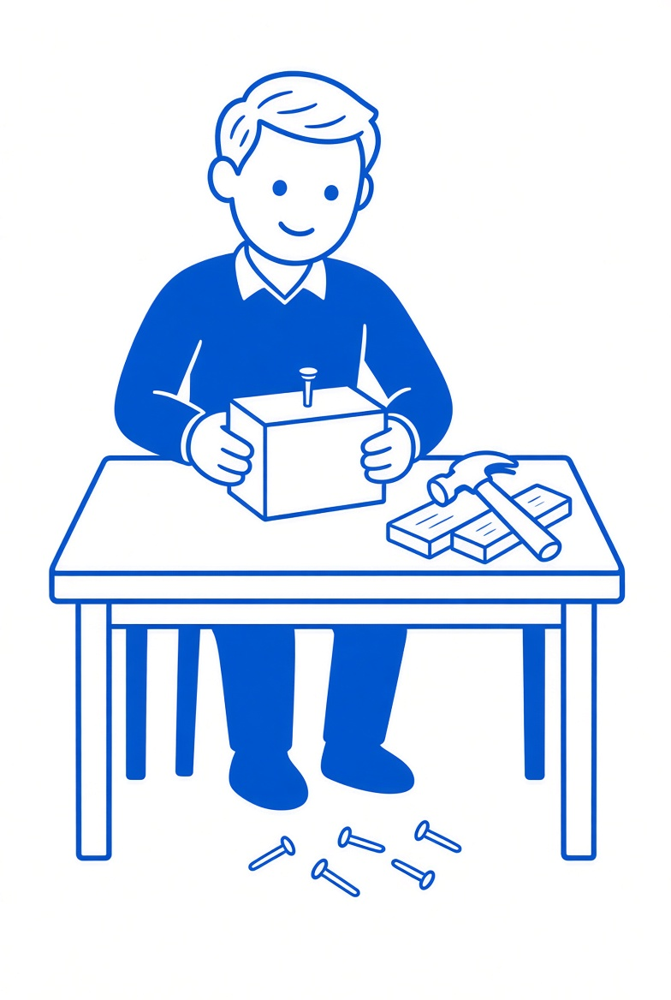
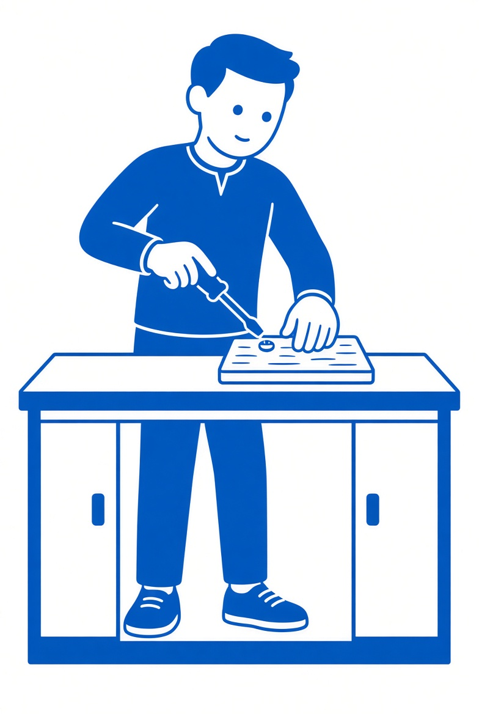
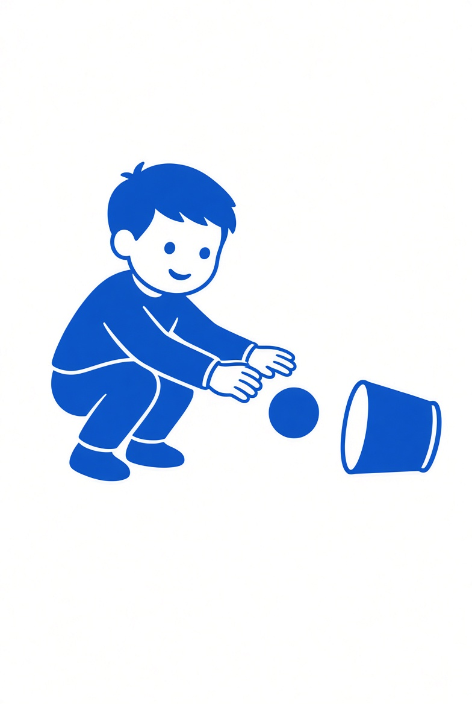
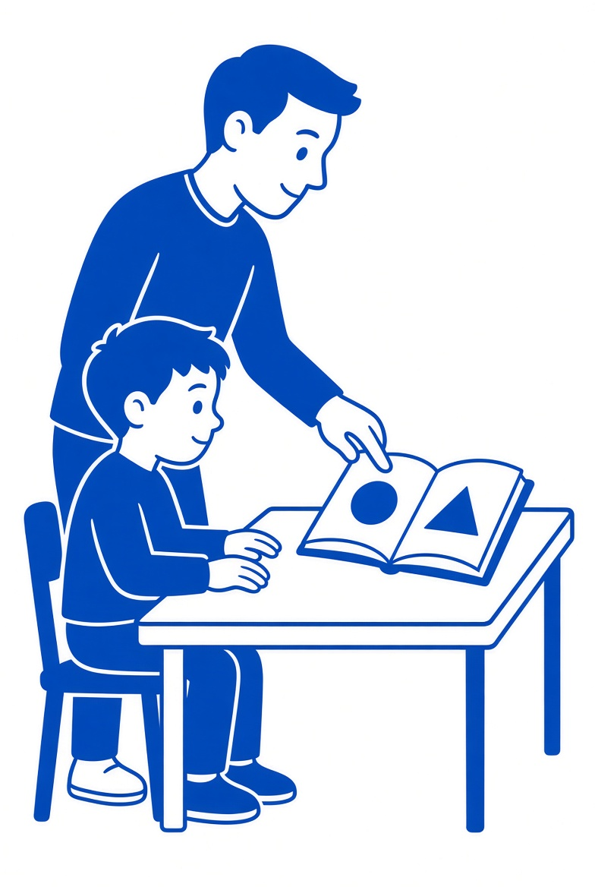
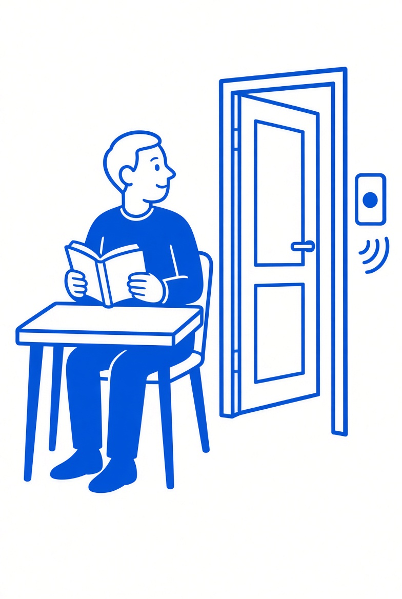
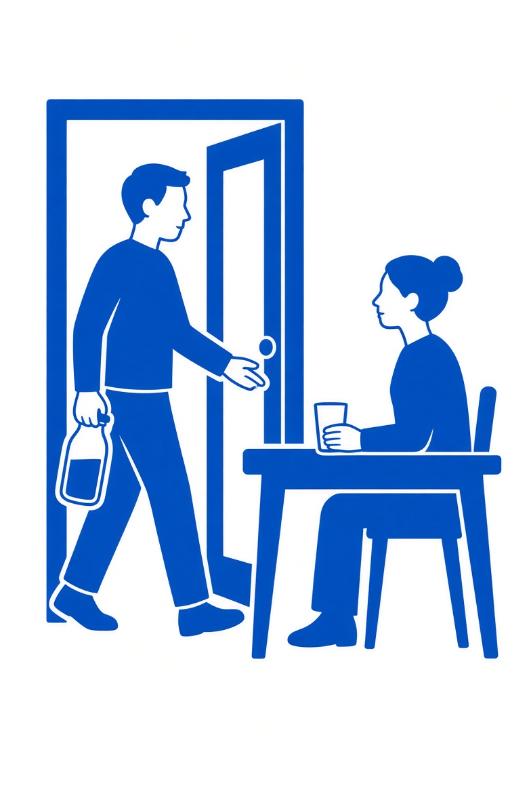
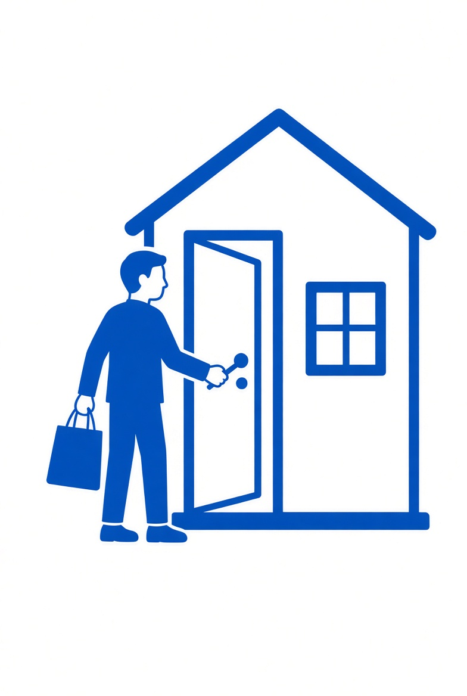
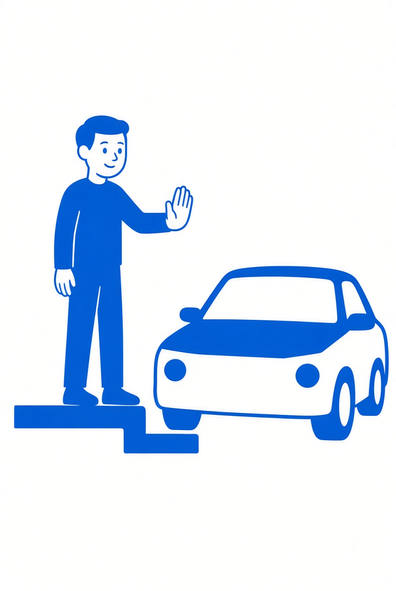
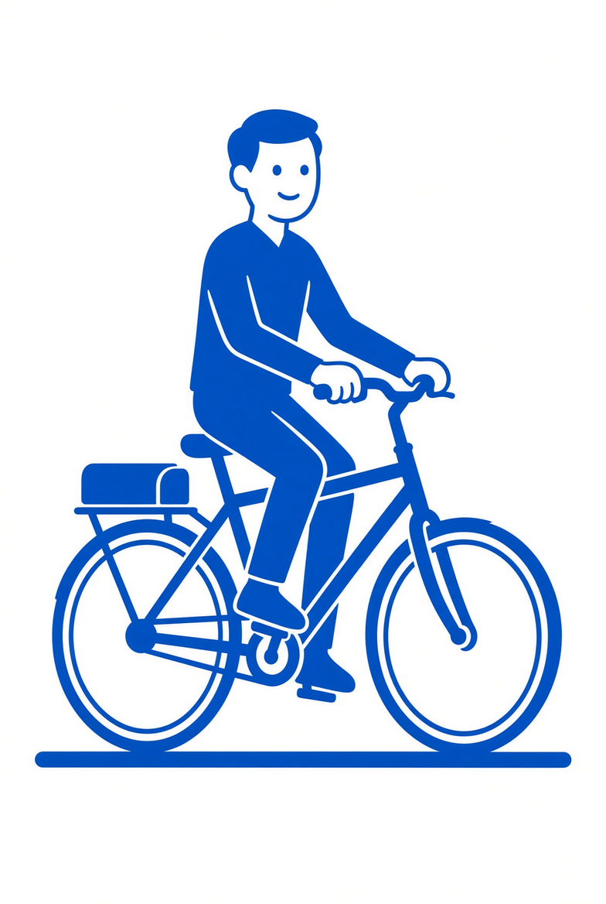

maken
to make
regelmatigrang 52Technology & toolsgetekend
- Scene
- one adult sits at a plain table, holding a small wooden box together with both hands; a hammer lies beside three loose planks and a few nails, and one nail stands half driven into the box. The box is clearly being assembled out of the planks.
- Must read
- a new box being made from loose planks and nails.
- Avoid
- a screwdriver and a broken chair leg (repareren); a pot on a stove and a spoon (koken); a brush on paper (tekenen); the finished box held up to show it.
- Alt text
- Iemand zit aan een tafel en zet met een hamer een kistje in elkaar uit losse planken.
- Example
- Ik maak een kop koffie.
I make a cup of coffee.
maken.png · rang 52 · A0 regelmatig · lexicon woorden.tsv

werken
to work
regelmatigrang 152Work & jobsgetekend
- Scene
- one adult sits at a plain desk seen from the side, both hands on the keyboard of an open laptop, eyes on the screen; a stack of papers and a pen beside it, a plain office chair. No second person, and the screen shows no text.
- Must read
- a person occupied at a desk with their work in front of them.
- Avoid
- a person digging with a spade (graven); a person at a workbench (maken); a person asleep at the desk; a boss pointing at the door.
- Alt text
- Iemand zit achter een bureau met beide handen op het toetsenbord van een laptop.
- Example
- Zij werkt in een winkel.
She works in a shop.
werken.png · rang 152 · A0 regelmatig · lexicon woorden.tsv

gebruiken
to use
regelmatigrang 216Abstract & generalgetekend
- Scene
- one adult stands at a kitchen counter, gripping a plain screwdriver with one hand, the flat tip already seated in the slot of a single screw in a small wooden board, that elbow drawn back to turn it. The other hand presses the board flat on the counter. No hammer, no loose parts.
- Must read
- one hand turning a screwdriver in a screw.
- Avoid
- the screwdriver lying untouched beside the board (maken); a screwdriver over a broken chair leg (repareren); a hand held out with the screwdriver on its palm (geven); one adult seated at a laptop (werken).
- Alt text
- Een volwassene staat aan het aanrecht en draait met een schroevendraaier een schroef in een plank.
- Example
- Ik gebruik een blauwe pen.
I use a blue pen.
gebruiken.png · rang 216 · A0 regelmatig · lexicon woorden.tsv

spelen
to play
regelmatigrang 218Arts & mediagetekend
- Scene
- one child crouches on the floor with both hands out, pushing a small round ball away from the fingertips; the ball sits halfway between the child's hands and the rim of an upturned cup two hand-widths away. The child grins at the ball. Plain floor, nothing else in the picture.
- Must read
- a child pushing a toy ball across the floor with both hands.
- Avoid
- an adult at a workbench with planks and a hammer (maken); a child bent over an open book (leren); a child asleep on a mat; a bat and an open field.
- Alt text
- Een kind hurkt op de grond en duwt met beide handen een kleine bal over de vloer.
- Example
- De kinderen spelen buiten.
The children are playing outside.
spelen.png · rang 218 · A0 regelmatig · lexicon woorden.tsv

spelen (muziek)
to play (an instrument)
regelmatigrang 218Arts & mediagetekend
- Scene
- One adult sits on a plain chair holding a violin under the chin, the bow drawn across the strings at the middle of its length, the left hand stopping a string on the neck. A music stand stands in front of them with a single sheet on it, blank. Nothing else in the picture.
- Must read
- a bow drawn across a violin held under the chin.
- Avoid
- a child pushing a toy ball across the floor (spelen); a child singing with an open mouth (zingen); a hand on a radio dial (luisteren); a guitar leaning in a corner with no player.
- Alt text
- Een volwassene zit op een stoel en strijkt met de stok over de snaren van een viool onder de kin.
- Example
- Mijn zoon speelt gitaar.
My son plays the guitar.
spelen-muziek.png · rang 218 · A0 regelmatig · lexicon woorden.tsv

leren
to learn
regelmatigrang 247Education & learninggetekend
- Scene
- one child sits at a plain table, seen from the side, both hands open on a large picture book showing two unlettered shapes, eyes down on the page; a grown adult stands behind the child's shoulder, leaning in, and one finger points at the page. No desk, no laptop, no other furniture.
- Must read
- two people bent over an open book, one pointing at the page.
- Avoid
- one adult alone at a laptop (werken); a person at a workbench with planks (maken); a hand turning a screwdriver (gebruiken); a child pushing a ball on the floor (spelen).
- Alt text
- Een kind zit aan een tafel voor een open boek; een volwassene staat erachter en wijst naar de bladzijde.
- Example
- Ik leer elke dag Nederlands.
I learn Dutch every day.
leren.png · rang 247 · A0 regelmatig · lexicon woorden.tsv

horen
to hear
regelmatigrang 262Abstract & generalgetekend
- Scene
- one adult sits reading at a table and turns the head sharply towards a doorbell beside the open door, the book still open in the hands; three short curved lines come from the bell. Nobody else is in the room.
- Must read
- a head turned sharply towards a ringing bell.
- Avoid
- a hand cupped behind the ear, leaning towards a radio (luisteren); a person speaking into a phone (bellen); a person opening the door to a visitor (openen); eyes on the book and the head still (lezen).
- Contrast
- Pair with luisteren. Same adult in the same room: the head snaps round towards the sound here, the body leans in with a hand behind the ear there.
- Alt text
- Iemand aan tafel met een open boek draait het hoofd snel naar een rinkelende bel bij de deur.
- Example
- Ik hoor muziek in de kamer.
I hear music in the room.
horen.png · rang 262 · A0 regelmatig · lexicon woorden.tsv

zetten
to put (upright)
regelmatigrang 271Movement & positiongetekend
- Scene
- one adult stands at a plain table and lowers a full glass of water with one hand until its base touches the table top; the base is just meeting the wood and the fingers are still round the glass. The eyes are on the glass and the table is bare.
- Must read
- a glass still held in the hand while its base lands on the table.
- Avoid
- a glass lying on its side on the table (leggen); a glass planted flat with both hands already off it (neerzetten); a glass lifted off the table (pakken); a bottle at the lips (drinken).
- Contrast
- Pair with leggen. Same hand on the same table: the object stands upright as its base lands here, it lies flat under a smoothing palm there.
- Alt text
- Een volwassene brengt een glas omlaag naar de tafel; de bodem raakt de tafel en de vingers houden het glas nog vast.
- Example
- Ik zet de fles op tafel.
I put the bottle on the table.
zetten.png · rang 271 · A0 regelmatig · lexicon woorden.tsv
geen beeld
zetten (koffie)
to make (coffee, tea)
regelmatigrang 271Movement & position
- Scene
- One adult stands at a kitchen counter and pours water from a small jug into the top of a filter coffee machine. Under the filter a glass pot is already half full of dark coffee. One cup stands beside it. No second person, no text.
- Must read
- water poured into a filter machine over a half-full pot.
- Avoid
- a glass put down on a table (zetten); a cup held to the mouth and sipped (drinken); a kettle on a hob with steam (koken); coffee poured from a pot into a guest's cup (schenken); a shop counter.
- Alt text
- Een volwassene giet water uit een kannetje in een apparaat; eronder staat een glazen kan met donkere drank.
- Example
- Ik zet elke ochtend koffie voor ons.
I make coffee for us every morning.
zetten-koffie.png · rang 271 · A0 regelmatig · lexicon woorden.tsv

wachten
to wait
regelmatigrang 277Timegetekend
- Scene
- one adult stands on a bare platform with the face turned towards the right edge, arms hanging, a small bag in one hand. A large round clock hangs high on the wall. There is no train, no track in view and nobody else in the picture.
- Must read
- one person standing still, facing forward, under a large round clock.
- Avoid
- one adult mid-stride walking left to right (lopen); a hand held up flat towards a car with its brake lights on (stoppen); a person running with speed lines (rennen); a seated queue of people; a calendar.
- Alt text
- Iemand staat stil op een leeg perron met een tas, onder een grote ronde klok.
- Example
- Wij wachten op de bus.
We are waiting for the bus.
wachten.png · rang 277 · A0 regelmatig · lexicon woorden.tsv

halen
to fetch
regelmatigrang 306Abstract & generalgetekend
- Scene
- one adult walks back into a kitchen through an open doorway carrying a bottle of milk in one hand, the other hand reaching to set it on the table where a second adult sits waiting with an empty glass.
- Must read
- a bottle carried back to a person who waits with an empty glass.
- Avoid
- a mug lifted off a shelf (pakken); a bottle passed over a shop counter (kopen); a bottle tipped to the mouth (drinken); a bottle pressed to the chest while standing still (dragen).
- Alt text
- Iemand komt door een deur binnen met een fles melk voor iemand die met een leeg glas aan tafel wacht.
- Example
- Ik haal brood bij de bakker.
I get bread from the baker.
halen.png · rang 306 · A0 regelmatig · lexicon woorden.tsv

praten
to talk
regelmatigrang 327Communication & languagegetekend
- Scene
- two adults stand facing each other half a metre apart, both with open mouths caught mid-word, one hand lifted and gesturing. Two short plain bars float above and beside each head, one bar per person. No other person is in the picture, and the bars carry no letters.
- Must read
- two people facing each other with an open mouth each and a plain bar above each head.
- Avoid
- one adult alone facing the viewer with a speech bubble (spreken); one adult holding a phone hard against an ear (bellen); a raised finger and a silent second person (vertellen); a row of seated listeners (luisteren).
- Alt text
- Twee volwassenen staan tegenover elkaar, mond open, met boven elk hoofd een korte streep.
- Example
- Zij praten de hele avond.
They talk all evening.
praten.png · rang 327 · A0 regelmatig · lexicon woorden.tsv

volgen
to follow
regelmatigrang 335Movement & positiongetekend
- Scene
- one adult walks from left to right along the bottom of the frame, and two metres behind them a second adult takes a stride in the same direction, head up, eyes on the walking gap between them. Plain ground, no path marks.
- Must read
- one adult walking behind another at a short distance, both heading the same way.
- Avoid
- two people walking side by side, arms swinging together (samen lopen); a person leading the way and looking back at a second one (leiden); a person at a corner turning round (keren); an arrow or a dotted trail.
- Contrast
- Pair with leiden. Same two walkers in a line: the same adult trails behind here, the raised arm and the front place are there.
- Alt text
- Een volwassene loopt een paar stappen achter een ander in dezelfde richting.
- Example
- De hond volgt mij naar huis.
The dog follows me home.
volgen.png · rang 335 · A0 regelmatig · lexicon woorden.tsv

betalen
to pay
regelmatigrang 389Money & tradegetekend
- Scene
- one adult stands at a shop counter and lays a folded banknote flat on the counter towards a shopkeeper, who faces them with an open palm, the note halfway between the two hands. A price card stands in front of a box, and nobody holds any goods. Above the head of the CUSTOMER paying floats one bold solid cobalt arrow pointing straight down at the head, with a clear white gap between arrow tip and hair; it marks who performs the verb. The other person has no arrow. No text.
- Must read
- a banknote pushed flat across a counter into a shopkeeper's open palm.
- Avoid
- a note and a paper bag of apples meeting on a counter (kopen); a note pressed into a lowered hand (geven); a bag of apples held out over a market stall (verkopen); a receipt torn from a till and a card.
- Alt text
- Iemand schuift een opgevouwen briefje over de toonbank naar de winkelier.
- Example
- Ik betaal de rekening in de winkel.
I pay the bill in the shop.
betalen.png · rang 389 · A0 regelmatig · lexicon woorden.tsv

vertellen
to tell
regelmatigrang 415Communication & languagegetekend
- Scene
- one adult sits on a chair and leans forward with an open mouth, both hands shaping the air in front of the chest; opposite them a second adult sits still, eyes wide and fixed on the first. One broad speech bubble full of short plain lines arcs from speaker to listener.
- Must read
- one speaker leaning towards a seated listener beneath a long speech bubble.
- Avoid
- two adults facing each other with one narrow bar above each head (praten); one adult alone facing the viewer with a small bubble (spreken); a book held open with both hands (lezen); a phone against the ear (bellen); letters inside the bubble.
- Alt text
- Een volwassene gebaart met open mond naar iemand die stil op een stoel zit.
- Example
- Mijn vader vertelt een grappig verhaal.
My father tells a funny story.
vertellen.png · rang 415 · A0 regelmatig · lexicon woorden.tsv

kosten
to cost
regelmatigrang 450Money & tradegetekend
- Scene
- one adult shopkeeper stands behind a counter and turns a price sign round on its stand so it faces the viewer, both hands on it and eyes on the sign; a round loaf lies on the counter below the sign. The sign shows a coin shape and no digits.
- Must read
- a shopkeeper turning a price sign towards the customer, one coin shape on it.
- Avoid
- coins and a note pushed across the counter (betalen); a paper bag of apples and a banknote meeting on the counter (kopen); a coin held out flat on an open palm (bieden); a hand pressing coins into the shopkeeper's palm (geven).
- Alt text
- Een winkelier draait met twee handen een bordje met een munt erop naar de kijker.
- Example
- Wat kost deze jas?
How much does this jacket cost?
kosten.png · rang 450 · A0 regelmatig · lexicon woorden.tsv

wonen
to live (reside)
regelmatigrang 451House & homegetekend
- Scene
- one adult stands at the front door of a small house and turns a key in the lock with one hand, a bag of shopping in the other, the door just opening inwards; the house is one plain outline with a window, and nobody else is in the picture.
- Must read
- a key turning in a front door held by a person with shopping.
- Avoid
- a person with a suitcase walking away from a door (verlaten); a floor plan with a roof (bouwen); a bed with a person asleep in it (slapen); a person at a door with flowers for someone inside (bezoeken); a removal van (verhuizen).
- Alt text
- Iemand met een boodschappentas draait een sleutel om in de voordeur van een klein huis.
- Example
- Ik woon in een klein huis.
I live in a small house.
wonen.png · rang 451 · A0 regelmatig · lexicon woorden.tsv

stoppen
to stop
regelmatigrang 488Movement & positiongetekend
- Scene
- one adult stands at the kerb with one flat hand raised towards an approaching car, the palm up at shoulder height; the car has both brake lights on and its front bumper a metre away, the bonnet dipping. The person looks at the car, not at the viewer.
- Must read
- a raised flat palm and brake lights on a car just short of it.
- Avoid
- an adult standing still under a clock (wachten); one adult walking behind another on a rope (volgen); two adults breaking a loaf between them (delen); a hand flat on a shut door (sluiten); a red traffic light.
- Alt text
- Iemand houdt op de stoeprand een vlakke hand op naar een auto met brandende remlichten.
- Example
- De bus stopt voor het huis.
The bus stops in front of the house.
stoppen.png · rang 488 · A0 regelmatig · lexicon woorden.tsv
geen beeld
stoppen (tas)
to put (into)
regelmatigrang 488Movement & position
- Scene
- One adult stands holding an open backpack in one hand and pushes a flat wallet down into it with the other hand, the wallet halfway inside the opening. The adult looks at the bag. A plain background, no other objects, no second person.
- Must read
- a wallet pushed down into an open backpack.
- Avoid
- a raised flat hand halting a car (stoppen); a backpack carried on the shoulders (dragen); a wallet handed to another person (geven); items spilled out of a bag (zoeken); a bag zipped shut.
- Alt text
- Een volwassene duwt met één hand een portemonnee omlaag in een open rugzak die met de andere hand wordt vastgehouden.
- Example
- Ik stop mijn sleutels altijd in mijn jaszak.
I always put my keys in my coat pocket.
stoppen-tas.png · rang 488 · A0 regelmatig · lexicon woorden.tsv
geen beeld
bellen (deur)
to ring (a doorbell)
regelmatigrang 735Communication & language
- Scene
- One adult stands on a doorstep facing a closed front door, one arm raised, a single finger pressing a round button on the wall beside the door. Small curved ring marks float next to the button. No phone, no second person, no text.
- Must read
- a finger pressing a round button beside a closed door.
- Avoid
- a phone held to the ear (bellen); a fist knocking on the door (kloppen); a hand turning a key in the lock (openen); a person already inside the open doorway (binnenkomen); a letter pushed through a slot.
- Alt text
- Een volwassene staat voor een gesloten voordeur en drukt met één vinger op een rond knopje naast de deur.
- Example
- Er wordt gebeld, kun jij opendoen?
Someone is at the door, can you answer it?
bellen-deur.png · rang 735 · A0 regelmatig · lexicon woorden.tsv

dromen
to dream
regelmatigrang 1000Body & healthgetekend
- Scene
- one adult lies asleep under a blanket with the eyes closed and the mouth relaxed; over the head floats a conventional cloud of thought bubbles with a small sun and a plain open umbrella inside. This is the conventional dream cloud; draw it as one symbol and put no letters or numbers in it.
- Must read
- a sleeping person with a cloud above the head holding a sun and an umbrella.
- Avoid
- a thought bubble with a question mark above a seated figure (denken); a lightbulb in a bubble above a head (weten); a figure lying flat on the bed with eyes open (liggen); a lamp with a light beam (lezen); letters in the cloud.
- Alt text
- Iemand slaapt onder een deken; boven het hoofd hangt een wolk met zon en paraplu.
- Example
- Ik droom vaak over de zee.
I often dream about the sea.
dromen.png · rang 1000 · A0 regelmatig · lexicon woorden.tsv

fietsen
to cycle
regelmatigrang 1308Transport & travelgetekend
- Scene
- one adult rides a bicycle from left to right along a plain road line, body upright and both hands on the handlebars; the right pedal is at the bottom of its circle with that leg straight and the other knee lifted, wheels on the ground, bag on a rear rack.
- Must read
- an adult upright on a bicycle with both feet on the pedals.
- Avoid
- a person with no bicycle walking past a parked one (lopen); a car with brake lights close to a raised palm (stoppen); a bicycle standing still against a wall (zetten); a motorcycle with an engine; a helmet shown alone.
- Contrast
- Pair with wandelen. The same upright posture on the move: the feet push pedals here, they step on the ground under a walking stick there.
- Alt text
- Een volwassene rijdt rechtop op een rijwiel, de handen aan het stuur en een tas achterop.
- Example
- Ik fiets elke dag naar mijn werk.
I cycle to work every day.
fietsen.png · rang 1308 · A0 regelmatig · lexicon woorden.tsv